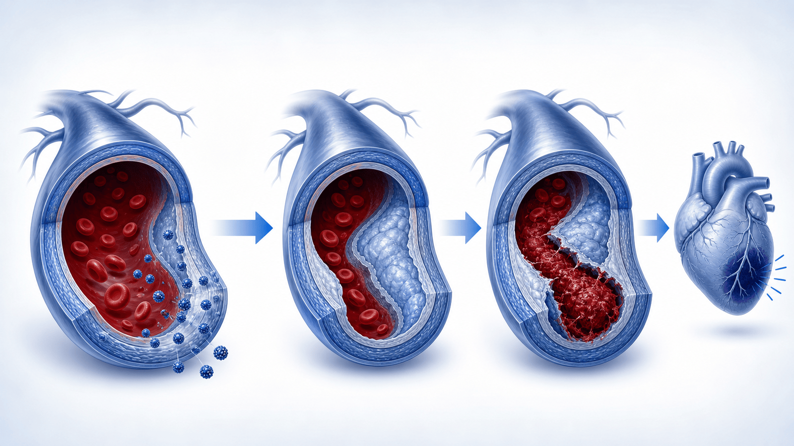
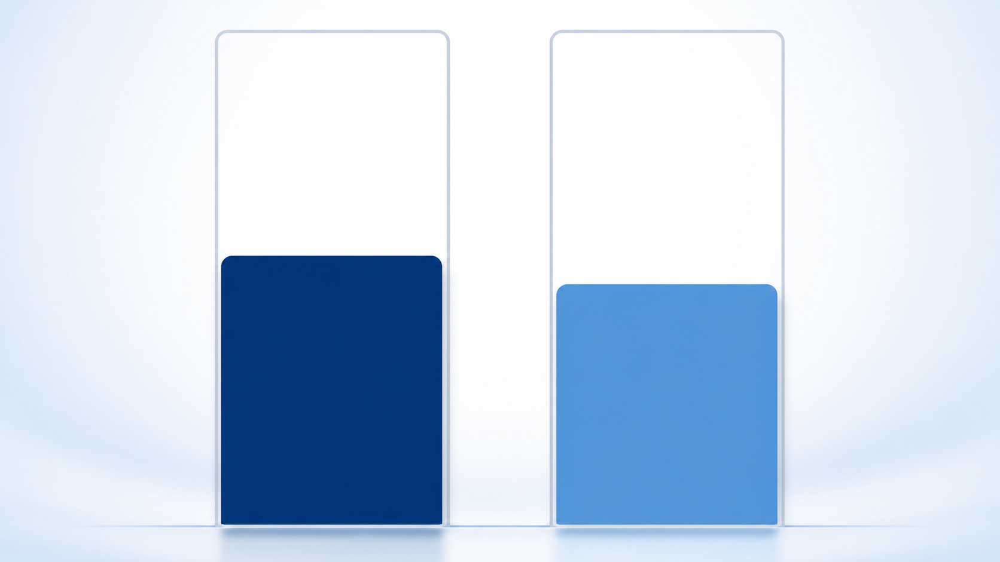

잘 알려지지 않은 심혈관 위험인자 — 지질단백질(a), 즉 Lp(a) 이야기
지질단백질(a)은 별도의 혈액검사로 확인합니다
한 연구에서는 심근경색 등 심장 사건과의 관련이 뚜렷했습니다

심근경색이나 뇌졸중을 아직 겪지 않은 분들을 추적했습니다
지질단백질(a)이 높든 낮든 심장 사건이 줄었습니다

두 그룹의 차이는 우연일 가능성을 배제할 수 없었습니다
유전으로 정해지는 수치보다 바꿀 수 있는 요인에 집중합니다
QR을 스캔하면 같은 자료를 휴대폰에서 다시 열 수 있습니다